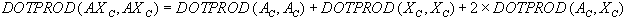
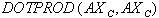

University of Sheffield, U.K
There is much current interest in computer-based methods for selecting structurally diverse subsets of chemical databases, e.g., for inclusion in biological screening programme or for the construction of combinatorial libraries. This paper summarises recent work in Sheffield on dissimilarity-based compound selection, which seeks to identify a maximally-dissimilar subset of the molecules in the database. More realistically, this approach seeks to identify a near maximally dissimilar subset, since the identification of the most dissimilar subset requires the use of a combinatorial algorithm that considers all possible subsets of a given dataset.
There is much current interest in computer-based methods for selecting structurally diverse subsets of chemical databases, e.g., for inclusion in biological screening programme or for the construction of combinatorial libraries (Willett, 1987; Martin et al., 1995; Shemetulskis et al., 1995). This paper summarises recent work in Sheffield on dissimilarity-based compound selection, which seeks to identify a maximally-dissimilar subset of the molecules in the database (Bawden, 1993; Lajiness, 1990; Holliday et al., 1996; Holliday & Willett, 1996; Turner et al., 1997). More realistically, this approach seeks to identify a near maximally dissimilar subset, since the identification of the most dissimilar subset requires the use of a combinatorial algorithm that considers all possible subsets of a given dataset. For example, the identification of the maximally-diverse subset of size n molecules from a dataset of size N molecules (where, typically, n << N) requires consideration of up to
possible subsets. Practical considerations hence dictate a simpler form of optimisation such as that illustrated in Figure 1, which is based on work by Bawden (1993) and by Lajiness (1990) and which has an expected time complexity of order O(n�N).
The Bawden-Lajiness algorithm is very simple in concept but raises two questions:
This paper describes recent work in Sheffield that addresses these two questions (Holliday et al., 1996; Holliday & Willett, 1996; Turner et al., 1997) .
As written, Step 2 of Figure 1 is not sufficiently detailed to allow an implementation, in that several different criteria could be used to select since the “most dissimilar” molecule from among the N-m molecules in Database to add to the m molecules that have already been selected for inclusion in Subset. This situation is analogous to the selection of a fusion criterion in hierarchical agglomerative clustering methods (Everitt, 1993), which involves the fusion of those two existing objects, or clusters of objects, that are least dissimilar to each other at each stage in the generation of an hierarchic classification. The various hierarchic agglomerative clustering methods differ only in the precise definition of �least dissimilar� that is used but it is known that they differ substantially in their ability to cluster databases of chemical structures (Willett, 1987; Brown & Martin, 1996).
|
Consider the algorithm shown in Figure 1. Assume that m molecules have already been selected for inclusion in Subset and that we are currently considering the i-th of the N-m molecules in _Database_to determine whether it should be added to Subset; specifically, we need to calculate the dissimilarity di,Subset. Let dij be the dissimilarity between the i-th molecule in Database and the j-th molecule in Subset. Then possible functions from which we can obtain a value for di,Subset include (but are not restricted to) the minimum, the maximum, the median and the sum of the set of dij values, i.e., MIN{ dij} , MAX{ dij} , MED{ dij} and SUM{ dij} . Once all of the N-m such dissimilarities have been obtained using the chosen function, that molecule is selected for inclusion in Subset that has the largest calculated value for di,Subset.
The Bawden-Lajiness algorithm has been implemented using each of the four definitions of dissimilarity given above. To ensure consistency in the results, the same molecule was used on each occasion to provide the initial seed for Subset in Step 1 of the algorithm (rather than selecting a molecule at random); in all of the experiments reported here, the initial molecule was that for which the sum of its dissimilarities to each of the other molecules in Database was a maximum. The experiments reported here (others are discussed by Holliday and Willett (1996)) used five 1000-compound subsets chosen at random from the Starlist database, which contains the 9518 molecules for which a log _P_oct value has been collected by the Pomona College Medicinal Chemistry Project. Each of the selected molecules was characterised by a 1124-member fragment bit-string, and the dissimilarities between pairs of molecules (one in Database and one in Subset) were calculated using the Tanimoto coefficient (Willett, 1987). The resulting values were subtracted from unity to give the dij values that were then used to identify which new molecule should be added to Subset at each stage of the algorithm.
The four dissimilarity definitions were each used to create a subset of n molecules from one of the datasets, and the effectiveness of the definitions were compared by means of the diversity of the subsets resulting from their use. We have quantified the concept of �diversity� in three different ways:
|
Dataset |
MIN |
MAX |
MED |
SUM |
|
1 |
4398.8 |
4249.0 |
4424.1 |
4540.6 |
|
2 |
4386.4 |
4161.7 |
4342.1 |
4530.5 |
|
3 |
4381.0 |
4177.9 |
4393.1 |
4527.6 |
|
4 |
4396.9 |
4068.5 |
4438.6 |
4533.3 |
|
5 |
4392.3 |
4175.0 |
4295.1 |
4529.1 |
Table 1 lists the sums of dissimilarities that were obtained on selecting 100-member subsets from the five different 1000-compound subsets of the Starlist file. The Kendall Coefficient of Concordance, W, was used to test whether or not the four definitions could be ranked in a statistically significant order of effectiveness. The value of W expresses the degree of agreement between a set of k judges (in this case the five different datasets) on the ranking of N objects (in this case the four different definitions of dissimilarity), with a value of zero (or unity) indicating complete disagreement (or complete agreement) between the k rankings (Siegel, 1956). The calculated value for W for the data in Table 1 is 0.904 (p £ 0.01). Since a significant measure of agreement has been obtained, it is possible to assign an overall ranking of the definitions in order of decreasing effectiveness (Siegel, 1956): this order is
SUM > MED > MIN > MAX.
|
Dataset |
MIN |
MAX |
MED |
SUM |
|
1 |
0.902 |
0.923 |
0.957 |
0.944 |
|
2 |
0.899 |
0.898 |
0.957 |
0.942 |
|
3 |
0.898 |
0.874 |
0.952 |
0.939 |
|
4 |
0.902 |
0.833 |
0.952 |
0.944 |
|
5 |
0.900 |
0.880 |
0.953 |
0.941 |
A different ordering of the four criteria is obtained when the diversity is quantified by means of the median dissimilarity, as shown in Table 2. Analysis of these values using the Kendall test shows a coefficient of concordance of 0.936 (p £ 0.01), this corresponding to the order
MED > SUM > MIN > MAX.
|
Dataset |
MIN |
MAX |
MED |
SUM |
|
1 |
722 |
667 |
531 |
679 |
|
2 |
729 |
704 |
570 |
703 |
|
3 |
720 |
696 |
580 |
677 |
|
4 |
728 |
644 |
501 |
645 |
|
5 |
735 |
678 |
421 |
663 |
Finally, Table 3 lists the numbers of non-zero elements in the union bit-strings. Here, the calculated value for W in the Kendall test is again 0.904 (p £ 0.01), this corresponding to the order
MIN > MAX > SUM > MED.
Thus far, we have considered only gross characteristics of the subsets, without any account being taken of their actual compositions. In the final set of experiments, we compared the constituent molecules of the subsets resulting from the use of each of the four definitions of dissimilarity. Molecules which were common to pairs of the subsets, to triples of the subsets, and to all four of the subsets were identified by combining subsets accordingly. An analysis of the resulting common molecules showed clearly (Holliday & Willett, 1996) that the four definitions result in very different groups of molecules, even though these subsets may result in a similar level of performance using the various criteria discussed previously
When this work started, our expectation had been that it would serve to identify the best definition of dissimilarity for use in compound selection, in much the same way as previous studies have resulted in unequivocal conclusions as to the relative merits of different hierarchic agglomerative clustering methods for cluster-based compound selection (Willett, 1987; Brown & Martin, 1996). If this had been the case here, then the three different performance measures we have used might have been expected to yield consistent rankings of the four definitions. However, this is clearly not the case, and we thus conclude that there is no significant difference in the effectiveness of the four definitions, despite the fact that the subsets resulting from the four definitions are markedly different in content. This in turn leads us to conclude that any of the four definitions can be used as the basis for a compound selection programme (although an inspection of the rankings for the three sets of experiments does suggest that the MAX definition is often inferior to the other three definitions).
**
A Fast Algorithm For Dissimilarity-Based Compound Selection
**
We have recently developed a fast implementation of the Bawden-Lajiness algorithm shown in Figure 1, drawing on previous work by Voorhees (1986) on the implementation of the group-average method for clustering document databases. This clustering method involves the fusion of pairs of clusters of objects on the basis of the average of the inter-object similarities, where one object is in one cluster of the pair and the other object is in the other cluster. Voorhees described an efficient algorithm for the group-average method that is appropriate for all similarity measures where the mean similarity between the objects in two sets is equal to the similarity between the mean objects of each of the two sets. However, the basic idea is applicable to any environment where sums of similarities, rather than the individual similarities, are required, and we have used this characteristic of the approach to provide a fast implementation of dissimilarity-based compound selection when the SUM criterion described above is used.
Let us assume that one wishes to investigate the similarities between each of the molecules in two separate groups, A and B. Next, assume that each molecule, J, in these groups is represented by a vector in which the I-th element, M(J,I), represents the weight of the I-th feature in M(J), e.g., a one or zero denoting the presence or absence of a particular fragment or a numeric value denoting some physical property. Let AC be the linear combination, or centroid, of the individual molecule vectors M(J) (1 <= J <= N(A)), where N(A) is the number of molecules in the first group) with W(J) being the weight of the J-th vector in A. The I-th element of AC, AC(I), is thus given by
The vector BC, which denotes the centroid of the second group, is similarly defined in terms of its N(B) constituent molecules.
Voorhees showed that the dot product of the two centroids is numerically equal to the sum of the of the pairwise similarities when the cosine coefficient (Willett, 1987; Holliday et al., 1996a) is used as the measure of inter-molecular dissimilarity, i.e., that
if, and only if, the weights W(J) are given by
i.e., the reciprocal square root of the squared elements of the vector M(J), and similarly for W(K). Thus, if this weighting scheme is used, the sum of all of the N(A)´ N(B) inter-molecular cosine similarities can be obtained by calculating the dot product of the two vector centroids.
It is simple to apply this equivalence to the selection of n compounds from a database, D, using the algorithm shown in Figure 1. In this case A denotes a single molecule, J, from Database and B denotes all of the molecules that have already been selected, i.e., Subset. It is possible to calculate the sum of the similarities between J and all of the molecules in subset using the equivalence above, which we refer to subsequently as the centroid algorithm, by means of just a single similarity calculation (that between J and the centroid of Subset), rather than by m-1 similarity calculations (between J and each separate molecule in Subset). The centroid algorithm thus provides an extremely efficient way of implementing Step 2 of the Bawden-Lajiness algorithm when the SUM definition of dissimilarity is used. Indeed, a complexity analysis of the resulting algorithm shows that it has an expected time complexity of O(nN), thus enabling dissimilarity-based compound selection to be carried out on very large files of compounds, subject only to:
In addition to its use for selecting a diverse subset of an existing database, we have recently applied the centroid algorithm to a related problem, that of selecting a set of external compounds that are as different as possible from an existing database (Turner et al., 1997). The rationale for this work is the interest that exists in techniques that can augment a corporate database by increasing the diversity of the molecules that are available for biological testing. Additional molecules can come from a range of sources, including publicly-available commercial databases, collaborations with academic synthetic groups, combinatorial chemistry and de novo design programmes, folk medicine, specialist synthetic organisations and compound-exchange agreements with other organisations. In what follows, we shall refer to any set of structures that are possible additions to a company�s existing corporate database as an external dataset.
Following the previous work on comparing definitions of dissimilarity, we suggest that the diversity, D(A), of a database, A, containing N(A) molecules, should be defined to be the mean pairwise inter-molecular dissimilarity. This measure of diversity can be calculated very rapidly using a simple modification of the centroid algorithm described above. Specifically, we are interested here in the cosine coefficients, COS(J,K), for the similarity between all pairs the molecules, J and K , in A and thus in the vector dot product of the centroid of A with itself_, i.e., DOTPROD_(AC, AC). Writing
we can hence calculate the sum of all of the pairwise cosine similarities for the molecules in A if the individual molecule vectors are weighted using the reciprocal square-root weighting scheme. The diversity, D(A), is then obtained by dividing this dot product by N(A)� to give the mean similarity when averaged over all pairs of the molecules in A, and subtracting the result from one, i.e.,
The centroid procedure thus provides a very fast way of calculating all of the pairwise similarities between the molecules within a given database and hence of calculating the diversity of that database.
The same approach can also be used to quantify the change in diversity that occurs when an external dataset X, containing N(X) molecules and with a centroid XC, is added to an existing database, A, to yield a new, merged database, AX containing N(A)+N(X) molecules and with a centroid AXC. The diversities of A, X and AX are
respectively. The change in diversity of A as a result of adding X , δ (A), is hence
Now
. Substituting this value for  into the equation above for δ (A), it is possible to calculate the change in diversity that will take place given just a knowledge of the centroids of, and the numbers of molecules in, the external dataset and the original database. This assumes that A and X are disjoint, i.e., that they do not have any molecules in common, since this would result in the size of the merged database being less than N(A)+N(X), but this is not a problem since duplicate molecules can be identified extremely rapidly by dictionary look-up prior to the calculation of δ (A).
If several external datasets, X1, X2 etc. are available, the calculation above can be carried out for each such dataset, thus enabling the identification of that which will best serve to increase the structural diversity of the existing corporate database. The centroid algorithm can hence be used to provide a rapid way of screening several external datasets to identify some small number that can then be analysed by more discriminating measures of diversity that take account of factors such as cost, sample availability and synthetic feasibility (Turner, et al., 1997).